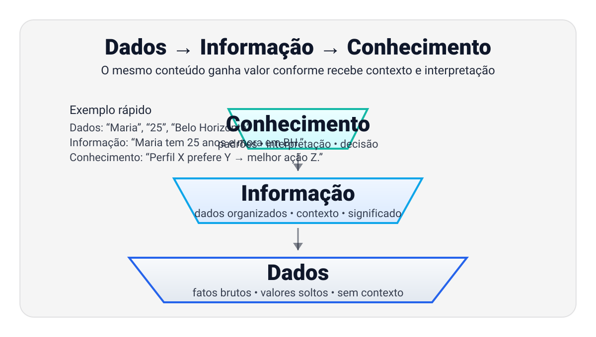
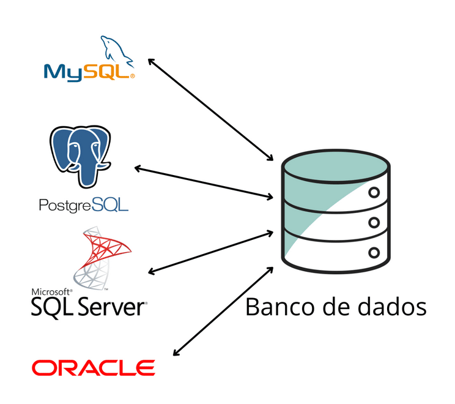

Introdução a Banco de Dados
Conceitos básicos, terminologias e a visão geral do que é um Banco de Dados (BD) e um Sistema Gerenciador de Banco de Dados (SGBD).
Navegação: ← →, PageUp/PageDown, Espaço/Enter • Tela cheia: F • Início/Fim: Home/End
O que você vai dominar hoje
- Dado vs informação (contexto).
- O que é BD e o que faz um SGBD.
- Modelo relacional: Tabela, Coluna, Linha.
- Chave Primária (PK) e Chave Estrangeira (FK).
- Como isso vira consultas (ideia de SQL).
Onde a Aula 1 se encaixa no curso
Competências
- Modelar e implementar bancos de dados relacionais.
- Aplicar SQL para manipulação de dados.
Nesta aula
- Conceitos básicos e terminologias.
- Primeiro contato com modelo relacional (o “formato” dos dados).
- Próximas aulas: ER, mapeamento, SQL, normalização, transações.
Dado vs. Informação
Dado é um fato bruto. Informação é o dado com contexto e significado.

Como ler a imagem: Dados são itens soltos (sem ligação). Informação organiza os dados (classifica e dá contexto). Conhecimento conecta informações para revelar padrões e permitir decisões.
Exemplos de dados
- “Maria”
- “25”
- “Belo Horizonte”
Exemplo de informação
“Maria tem 25 anos e mora em Belo Horizonte.”
Analogia: peças soltas de um quebra-cabeça vs. o desenho montado.
Sem contexto, é só um número
31999990000
Pergunta: o que isso significa? Sem contexto, é só um dado (um número longo). Com contexto, vira informação: telefone de alguém, ou parte de um cadastro.
Ideia de BD: guardar dados + contexto (estrutura) para recuperar informação quando precisamos.
BD e SGBD
Banco de Dados (BD)
É o conjunto organizado de dados: tabelas, registros, regras e relacionamentos.
SGBD
É o software que guarda, busca, protege e controla o acesso aos dados (ex.: MySQL, PostgreSQL, Oracle).

Analogia: BD é o “arquivo de aço” com pastas. SGBD é o “arquivista/bibliotecário” que encontra e guarda tudo rápido e com regras.
Tabela, Coluna e Linha
No modelo relacional, dados vivem em tabelas. Cada coluna descreve um atributo e cada linha é um registro.
| ID_Cliente (PK) | Nome | Telefone | Cidade |
|---|---|---|---|
| 1 | Maria | 31999990000 | Belo Horizonte |
| 2 | João | 21988887777 | Rio de Janeiro |
Analogia: planilha bem organizada, com regras para evitar bagunça.
Como o sistema sabe “qual Maria”?
Se existirem duas pessoas com o mesmo nome, precisamos de um identificador que não se repete: a Chave Primária (PK).
Regra mental
- PK não se repete.
- PK não é nula.
- PK identifica 1 registro de forma única.
Analogia
CPF/Matrícula: podem existir nomes iguais, mas não o mesmo identificador.
O “Fichário Humano” (Clínica Veterinária)
Objetivo: transformar a sala em um banco de dados vivo.
- Criar uma tabela CLIENTE com colunas (ID_Cliente, Nome, Telefone...).
- Cada aluno cria registros, garantindo ID_Cliente único.
- Colar os registros no quadro para formar a tabela.
Analogia: o quadro vira o “disco rígido”; os cartões viram “registros”.
Como executar a dinâmica
Organização
- Grupos de 4–5 pessoas.
- O quadro é o “disco”.
- Cartões/papel = registros.
- Post-its (2 cores) = tabelas diferentes.
Materiais (por grupo)
- Cartões ou papel cortado (10–15 unidades).
- Canetas.
- Fita adesiva.
- Post-its de duas cores.
Passo a passo
- Definir as colunas da tabela CLIENTE e destacar ID_Cliente como PK.
- Criar 2–3 registros por pessoa (cada cartão é uma linha).
- Conferir: ninguém repete o ID_Cliente.
- Colar no quadro e “enxergar” a tabela pronta.
Analogia: PK é a “etiqueta única” do fichário.
Consultas manuais: professor pergunta, grupos respondem
Agora crie a tabela PET (cor diferente) com FK.
- Colunas sugeridas: ID_Pet (PK), Nome_Pet, Tipo, ID_Cliente (FK).
- Cada grupo cria alguns pets e liga cada um a um cliente por ID_Cliente.
Perguntas (queries) para o professor
- “Quais pets pertencem ao cliente Maria?”
- “Liste os clientes que têm pets do tipo Gato.”
- “Quantos pets cada cliente tem?”
Formato rápido
- 1 ponto por resposta correta.
- Bônus se o grupo explicar o passo a passo (PK → FK → resultado).
- Objetivo: entender lógica, não velocidade.
Analogia: o grupo vira o “SGBD” executando a consulta no quadro.
Onde entram os pets?
Misturar dados de cliente e pet na mesma ficha gera redundância e bagunça. A solução é criar outra tabela: PET.
CLIENTE
| ID_Cliente (PK) | Nome |
|---|---|
| 1 | Maria |
| 2 | João |
PET
| ID_Pet (PK) | Nome_Pet | Tipo | ID_Cliente (FK) |
|---|---|---|---|
| 10 | Thor | Cão | 1 |
| 11 | Mimi | Gato | 1 |
FK é o “gancho” que liga registros: ID_Cliente na tabela PET aponta para CLIENTE.
Queries “manuais”
O professor faz uma pergunta e os alunos atuam como “SGBD”, buscando a informação no quadro.
- “Me traga os pets cujo cliente seja a Maria.”
- Passo 1: localizar o ID_Cliente da Maria.
- Passo 2: buscar na tabela PET os registros com esse ID.
- Passo 3: devolver os nomes dos pets.
Isso é a intuição do que um SELECT + JOIN faz no SQL.
Como isso aparece no SQL
Exemplo de consulta (conceito, não é para decorar hoje):
SELECT p.Nome_Pet
FROM PET p
JOIN CLIENTE c ON c.ID_Cliente = p.ID_Cliente
WHERE c.Nome = 'Maria';Analogia: “peça” ao SGBD para cruzar tabelas e devolver a informação certa, com regras e rapidez.
O que fica da Aula 1
- Dado vira informação quando ganha contexto.
- BD é dados organizados; SGBD é quem gerencia com regras.
- Tabelas: coluna = atributo; linha = registro.
- PK identifica de forma única; FK liga tabelas (relacionamentos).
Próximo passo do curso: ER e como transformar ER em tabelas.
Arquivos desta aula
- Plano de aula (PDF): A01_Planos_de_aula___META.pdf
Você pode anexar aqui também slides, listas e exercícios conforme for adicionando na pasta.
Perguntas?
Se quiser, eu adapto o exemplo da clínica para um exercício avaliativo.